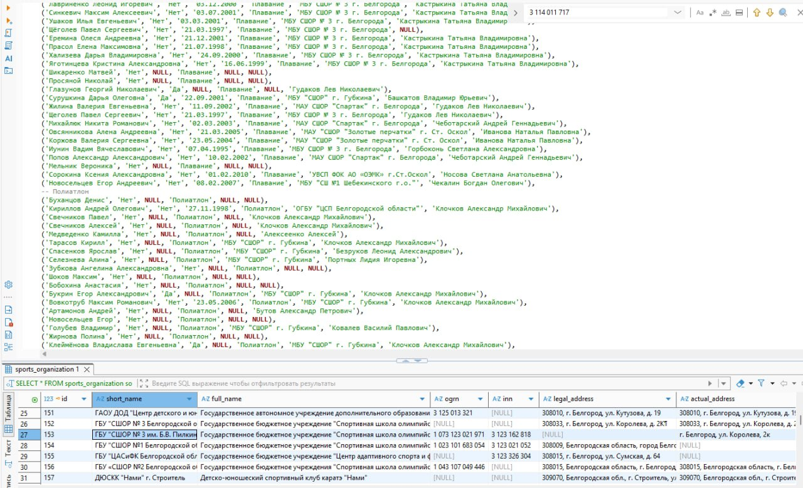
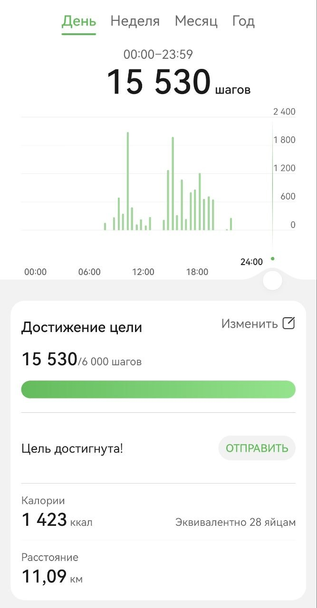
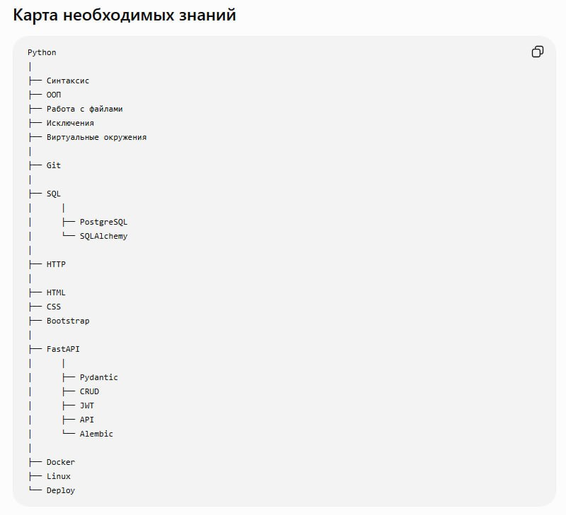
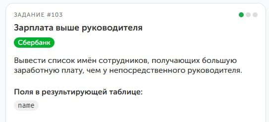
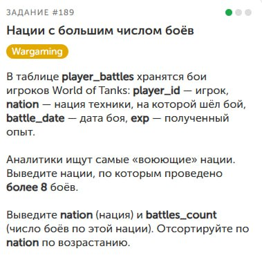

👾День 21👾
Пошла третья неделя. Пока не хочу оглядываться, потому что в планах никаких грандиозных изменений нет. Продолжил изучать Git, придерживаюсь графика и постараюсь пройти его до конца недели.
Всё же днях подведу итоги трёх недель, чтобы понять, что было позади. Думал, что в отпуске будет больше времени. Как же я ошибался. Удаётся выделить на курсы всего пару часов вечером.
В общем, долго грузить не буду: придерживаюсь плана, а дальше по ситуации.
Спасибо, что продолжаешь читать. До скорой встречи! Обещаю, что дальше будет интереснее.
roadtotechwritter
👾День 20👾
Сегодня пост особо короткий, но не по той причине, о которой вы могли подумать. Закончил проверки БД ЦСП, сделал пару отчётов, сравнил с 1С ошибок и различий пока не нашёл. Можно сказать, что пока это успех. Теперь остаётся сделать пару скриптов для дальнейшего заполнения и обновления и можно начинать ими пользоваться.
Первое время буду дублировать данные для полных тестов, пока не перейду полностью на SQL. А в идеале сделать уже веб-приложение. Но уже есть лёгкое чувство гордости. Ведь мечтал и планировал это последние пару лет.
🕵️Немного продвинулся в расследовании. Оно оказалось немного запутанным, да и свободного времени было мало, поэтому завтра ещё поковыряю.
И, конечно, не забыл про Git продолжил курсы, сделал первые репозитории и, надеюсь, до конца недели всё закончу.
А на этом всё. Спасибо, что дочитал до конца, и до скорой встречи!
roadtotechwritter
👾День 19👾
Сегодня почти весь день занимался БД ЦСП. Проверки дали свои плоды: я успешно нашёл неточности в данных и корректно загрузил их в таблицы, соблюдая все связи. Это, конечно, требует много времени, но результат того стоит.
Продолжили снимать сериал про детектива Хлебушка. Интересное ещё впереди. Завтра планируется выход новой серии.
А следующим пунктом плана на отпуск будет изучение Docs as Code. Заодно пробегусь по Git и опубликую БД вместе со скриптами создания и заполнения.
В последние дни отчёты получаются короткими, да и работа проходит довольно однообразно. Возможно, скоро удастся порадовать вас чем-то более интересным.
А на этом пока всё. Спасибо, что дочитал до конца, и до скорой встречи!
roadtotechwritter
👾День 18👾
В отпуске у меня обычно две традиции. ~~Жевать жвачку и надирать жопы, жвачку я уже дожевал~~ сбрить бороду и переустанавливать систему. Бороду я так и не сбрил, ибо спойлер есть шанс оказаться на работе в отпуске.
Поэтому взялся за выброс мусора из ноута и перестановку системы. К вечеру успешно всё было окончено.
Остаток дня потратил на курсы по SQL и попутное заполнение БД ЦСП. Пока всё идёт гладко и каждую итерацию проверяю. Ошибок пока не нашёл. Надеюсь, так и продолжится. Буду держать в курсе.
Также закончились съёмки серии приключений Детектива Хлебушка. Завтра будет выпущена для всех. Премиум подписчики получат в секретном чате на несколько часов раньше. Следите за обновлениями.
А пока на этом всё. Спасибо, что дошёл до конца и до скорой встречи.
👾День 17👾
Ух. Денёк оказался жаркий. Постараюсь по порядку. Сегодня сделал уклон в заполнение БД. Пожалуй, не ошибся. Когда заполнял последнюю таблицу, то вспомнил нюанс, который надо было учитывать в самом начале. В своё время результаты заполняли несколько человек и делалось это не всегда аккуратно. В итоге имеем лишние пробелы, опечатки и невозможность правильно соединить календарный план с результатами. Из-за этого ключи не подтягиваются корректно и начинают появляться дубли. В общем, решил всё начать заново, с учётом всех ошибок.
Ещё вспомнил, что у меня остался непройденный курс по SQL, который я когда-то купил на Stepik. Поэтому вернулся к нему и прошёл несколько задач.
На этом пока всё. Спасибо, что дошёл до конца и до скорой встречи!
roadtotechwritter
👾День 16👾
Помнится, я пытался выбрать синюю или красную таблетку при изучении матриц. В итоге решил следовать за чёрным ублюдком белым кроликом и судьба вновь свела меня с гетерохромией. Поэтому сегодня коротенько: похоже, буду переводиться в ночной режим и отправлять отчёты на утро.
Однако, несмотря ни на что, сегодня удалось немного заняться Python: порешать пару задач про кортежи и попытаться глубже разобраться в теме. И я понял, что тут уже следует не спешить, а постараться достичь полного понимания.
Также продолжил заполнять таблицы БД ЦСП. Количество спортсменов дало о себе знать и пришлось немного повозиться с внешними ключами. Пока не смог справиться с ними, поэтому оставил на более свежую голову.
Не забыл и про детектива Хлебушка. Сценарий почти закончен. Съёмки эпизодов уже начались, и скоро смогу показать тебе, что из этого вышло.
А пока на этом всё. Спасибо, что остаёшься рядом и до скорой встречи!
roadtotechwritter
👾День 15👾
Сегодня коротенько. Продолжаем действовать согласно плану. Пробежался по книге Васильева. Осилил несколько глав и закрыл задачи для каждой. Дошёл до раздела с кортежами. Теорию проглотил осталось поглотить практику. Думаю, завтра с этого и начну.
Искал новые дела для Детектива Хлебушка. Нашёл пару дел. Осталось снять серию. Режиссёр уже найден. Идёт работа над сценарием. В ближайшие дни начнём производство. Новые интриги и не менее запутанные расследования.
Продолжил заполнять БД ЦСП. Потребовалось немного больше времени. Удалось загрузить информацию о спортивных учреждениях, тренерах и сотрудниках. Но когда сделал выгрузку спортсменов и увидел цифру в 3,5 тысячи, то понял, что финальный босс еще впереди. Удалось оформить около половины. А дальше еще выгрузить результаты все результаты с 2022 года по текущий.
К чему я это всё. Конец еще не близок. Но мы обязательно к нему придём.
А на этом всё. Спасибо, что дочитал до конца.

roadtotechwritter
👾День 14👾
Вот и пошла вторая неделя. Признаться, думал, будет сложнее поддерживать ежедневный марафон. Но уже даже стал получать некое удовольствие от процесса. Посмотрим, что будет на 21 день. Может, выработается привычка? Спойлер: нет. Никогда со мной так не работало.
ТОГДА (здесь должна быть заставка сериала ~~Супернатуралы~~ Сверхъестественное).
🐍За вторую неделю удалось завершить разделы курса по Python «Повторяем основные конструкции языка Python», «Тип данных bool и NoneType», «Вложенные списки». На вложенных списках немного подольше посидел и у DeepSeek попросил задач на практику. Показалось, что более-менее разобрался.
Сегодня взялся за матрицы. Сделал несколько задач, но они как-то тяжеловато дались. Причём задачи от нейросети более-менее давались, а вот на Stepik я спотыкался. Подумал, что надо сделать шаг назад и пробежаться по умной книге. С курсом для начинающих я также поступал и это очень помогло. Стало гораздо проще двигаться дальше.
🤓Остановился на книге Алексея Васильева "Программирование на Python в примерах и задачах". В прошлом году учил C# по его книге. Прекрасная книга. Материал отлично изложен и уже ближе к концу можно было делать мини-приложения. А потом меня ударили палкой по голове и я решил перейти на Python. Буду рассказывать в дальнейшем, как её прохожу.
🕵️♀️Продолжил и закончил расследование Детектива Хлебушка. Осталось только оформить. Но довольно забавно было. Хорошо помогает изучить SQL-запросы и JOIN. Спойлер: убийца садовник.
Также наконец-то смог заняться БД ЦСП. Сегодня удалось заполнить несколько таблиц (Календарный план, Виды спорта). Уже можно делать небольшие отчёты. Чуть позднее похвастаюсь подробнее. Думаю, на выходных уже получится полностью закончить перенос.
А на этом пока всё. Большое спасибо, что продолжаешь читать и поддерживать мою писанину. Крепко обнял и покружил.
До скорой встречи.
roadtotechwritter
👾День 13👾
Чёртовый день. Продолжаем двигаться согласно плану. Сегодня немного позанимался Python. Завершил подраздел про вложенные списки и немного прочитал теорию про матрицы. Пока в раздумьях: брать синюю или красную?
Продолжил расследование Мистера Хлебушка. Думал, что там приключение на 15 минут и я быстро разберусь, но оказалось всё не так-то просто и очевидно. Следи за событиями в сериале «Детективное агентство детектива Хлебушка». Завтра новая серия.
Ну и самое важное. Дело сдвинулось с мёртвой точки. Сделал таблицы для БД ЦСП. Успел заполнить таблицу субъектов РФ. Попросил DeepSeek написать скрипт по выгрузке, потому что вручную я бы неделю переписывал города, посёлки и сёла. Закинул разряды и почти накатал виды спорта.
Дальше начнётся самое интересное. Надо будет придумать, как раскидать остальную информацию и учесть, что теперь значения будут заполняться согласно индекса. Позже расскажу, как прошло.
🔥А на этом пока всё. Спасибо, что дошёл до конца.
roadtotechwritter
👾День 12👾
С каждой цифрой становится всё более страшно. Кажется, что столько времени уже прошло, а стоишь на том же месте. Перечитал дневные отчёты и немного отлегло. 😁
Сегодня продолжил вникать в Python. Ещё раз похвалил себя ~~(кто, если не я)~~, что поковырял промпт и попросил нейросеть дополнительно меня обучать с помощью задачек.
После пяти задач на закрепление темы курс на Stepik даётся легче. Хотя некоторые всё равно приводят в ступор, но тут скорее, не из-за незнания синтаксиса, а из-за непонимания того, как подступиться к задаче и что именно от тебя хотят.
Подумал, что нужно не забывать про SQL, поэтому продолжил расследование. Создал отдельную тему. Буду держать в курсе.
Пока на этом всё. На днях надеюсь, получится сесть за мини-проекты, и расскажу о них, как и обещал.
Спасибо, что дошёл до конца, и до скорой встречи!
roadtotechwritter
👾День 11👾
🐍Сегодня удалось заняться только курсами Python. Завершил два подраздела и изучил вложенные списки. Сразу же пришла в голова идея, как это можно реализовать. В голове ещё два мини-проекта.
Один для тренировок. Он небольшой и уже работает, но, применив новые знания, было бы неплохо превратить его в бота и немного улучшить. Расскажу тебе о нём позднее.
Второй надо обмозговать на бумаге. Было бы славно сделать бота, который будет подбирать рацион на день и давать ссылки на рецепты. Ведь самый частый вопрос: «Что приготовить?».
Stepik напомнил, что прошла ещё одна неделя, и даже немного похвалил. Приятно.
🔥Пока на этом всё. Спасибо, что дочитал до конца, и до скорой встречи!
roadtotechwritter
👾День 10👾
Сегодня закончил рисовать схему. На первый взгляд выглядит даже логично. Однако есть подозрения, что ошибки всплывут во время создания базы. Завтра планирую начать заполнять таблицы и постараюсь сделать хотя бы парочку.
🐍Удалось пройти раздел «Тип данных bool и NoneType», решил пару задач. Поймал себя на мысли: чем больше узнаю, тем острее ощущение, что я ничего не знаю. Впереди ещё несколько книг и написание собственных проектов. Поэтому сделаю упор на курс, а по окончании пробегусь по нескольким книгам.
Снова коротко, великих достижений нет. Интересных задач тоже не появлялось. До «детектива» сегодня не успел добраться. Надеюсь, далее будет чем поделиться.
🔥А на этом пока всё. Спасибо, что дошёл до конца.
roadtotechwritter
👾День 9👾
Сегодня получился небольшой детокс.
🐔Пошёл смотреть на китайских курочек. Спойлер: не понравилось. Белгородские курочки интереснее.
До ноута добрался уже поздно вечером. Всё же удалось немного поработать над схемой. Почти закончил и надеюсь, что завтра уже смогу полноценно её показать и формировать таблицы для заполнения. Перед сном планирую решить пару задач по Python, чтобы с чувством выполненного долга закруглиться.
Отчёт сегодня получился очень коротким, но спасибо, что дочитал до конца.

roadtotechwritter
👾День 8👾
🐍Сегодня день Python.
Решил 8 задач. Пару задач приводили в уныние: казалось, что пройденный курс для начинающих ничему не научил. Всё же когда удавалось найти решение, приходило осознание, насколько это гениально. Задача заставляет использовать уже изученные инструменты, но в таком ракурсе, с которым ты ещё не встречался.
Из интересного попалась задача на игру "Камень, ножницы, бумага". К счастью, я уже сталкивался с ней в книге Head First Python. Поэтому проблем не возникло. Но автор курса всегда держит интересное на потом, и следующим заданием стала вариация игры "Камень, ножницы, бумага, ящерица, Спок". Код, подготовленный ранее очень помог и получилось успешно пройти это задание.
На этом раздел был пройден и с чувством гордости я закрыл вкладку.
Остаток времени потратил на отрисовку схемы БД. Времени было немного, поэтому пока не буду хвастаться. На этом пока всё. Спасибо, что дошёл до конца.
roadtotechwritter
👾День 7👾
Уже неделя прошла... В идеале надо подвести итоги, а меня штормит, как марокканскую лодку. Не получается сосредоточиться сегодня, и прыгаю с курса на курс, с сервиса на сервис. Но в этом даже есть свои прелести. Скоро расскажу, какие. А пока итоги.
Что удалось выполнить:
✔️Начал курс "Продвинутый Python" успел пройти половину раздела "Повторяем основные конструкции языка"
✔️Завершил курс SQLAcademy, не получил сертификат (!!!), закрыл 50 + задачек по SQL.
✔️Подготовил наброски БД проекта, решил остановится пока на создании БД, после изучения всех навыков, вернуться к оболочке.
✔️Приступил к расследованию преступления в SQLCity.
Что предстоит:
✔️Продолжить курс "Продвинутый Python" в идеале закрыть несколько разделов
✔️Набросать ER - схему БД
✔️Завершить расследование
✔️Разобраться с Git
Сегодня удалось немного попрактиковаться в Python. Решил несколько задач. Не слишком сложных, но две из продвинутого курса заставили мозг пошевелиться.
Потом решил, что надо бы не забывать SQL. Тут я вспомнил про сервис SQL Murder Mystery, где нужно распутывать детективное дело, обращаясь к базам данных через SQL-запросы.
Произошло преступление, и детективу нужна ваша помощь. Детектив передал вам отчет с места преступления, но вы его куда-то потеряли. Вы смутно помните, что преступление было связано с убийством, которое произошло где-то 15 января 2018 года в
SQL City. Для начала найдите соответствующий отчет с места преступления в базе данных полицейского управления.
На текущий момент удалось найти потерянный отчёт и в нём выяснить:
Камеры видеонаблюдения зафиксировали двух свидетелей. Первый свидетель живет в последнем доме на Нортвестерн-драйв. Вторая свидетельница по имени Аннабель живет где-то на Франклин-авеню. Буду держать в курсе и позднее расскажу о ходе расследования. Главное не выйти на самого себя.
🔥Пока на этом всё. Получилось многобукв. Поэтому спасибо тебе огромное, что дошёл до конца.
roadtotechwritter
👾День 6👾
Как и говорил, интересного было мало. Сегодня взялся за дорожную карту проекта. Расписал шаги по созданию БД, искал, где лучше визуализировать процесс, и немного пощупал Figma. Думаю, что будет неплохо оформить шаги именно там. Заодно научусь основам работы.
На бумаге (да, я старовер и до сих пор предпочитаю писать в блокнот) набросал заметки по созданию ER-схемы БД. Посмотрел, где можно её нарисовать, и пришёл к выводу, что лучше остаться в Visio.
После начал думать, что же я хочу от проекта. После поиска и общения с ИИ набросал навыки, которые могут пригодиться: Python, Git, SQL, http, html, CSS, Bootstrap, FastAPI, Docker, Linux, Deploy.
Куда я вписался? И зачем мне все это?😁
Спасибо, что дошел до конца и до скорой встречи.

roadtotechwritter
👾День 5👾
Сегодня сильно похвастаться нечем. Похоже в ближайшие дни интересного будет мало.
Сегодня успел завершить курс по SQL. Впечатления двоякие. Курс собран совершенно нелогично. Особенно последние два модуля. Переходишь на продвинутый SQL, создание хранимых функций и тут тебе начинают рассказывать как создавать таблицы, с этого обычно начинать надо. Материал подан очень сухо и дельного мало. Не советую. Особенно, если это первый курс.
Также удалось порешать немного задач. Средние задачи уже дают призадуматься и пошевелить мозгами. Осталось 9 задач до получения сертификата.
Также из планов рассказать с чего вообще было решено углубиться в БД и рассказать о будущем питомце. Спойлер: будем переносить конфигурацию 1С (учёт спортсменов, тренеров, спортивных школ и т.д. Белгородской области и результаты соревнований различного уровня). В идеале уйти от 1С и сделать веб-приложение.
🔥Спасибо, что дочитал до конца. Лови лучи добра!
roadtotechwritter
👾День 4👾
Дорогой дневник, так, стоп, это не сюда.
Приветствую, путник. Завершился четвёртый день пути, и, признаться, я совершенно не понимаю, как вести отчёты.
В идеале должна быть структура, но пока получается делать по наитию, которое вновь привело к базам данных. После 10-й задачи я уже не мог остановиться и завершить этот поток. В то же время я понимаю, что это был лёгкий уровень, а самое интересное будет дальше. Однако меня сбила с толку задача от Сбера. Признаться, так и не смог с ней справиться и отложил на потом.
В задаче минимум условий, а, поискав решение, я обнаружил, что нужно два раза ссылаться на одну и ту же таблицу, где в одной куче и сотрудники, и подчинённые. Насколько это реально в жизненных условиях, вопрос пока открытый. Надеюсь, это не повсеместная практика. Вернусь позже, когда стану умнее.

🔥 Интрига сохраняется! Спасибо, что дочитал до конца, и до скорой встречи!
roadtotechwritter
👾День 3👾
Приветствую, путник.
Вот и настал третий день нашего пути. Как и говорил ранее, решил сделать упор на базы данных.
Поэтому ворвался на курсы по SQL, завершил модуль «Основы выборки II» и сразу же прошёл «Манипулирование данными».
Сложилось ощущение, что SQLAcademy (https://sql-academy.org/ru) делает упор на свой ИИ. Задания скачут от невероятно лёгких до совершенно непонятных, причём в самом начале, когда нужно больше разъяснений, попадаются задачи, где условие уместилось в два слова и ты не понимаешь, что требуется. А когда уже разобрался и хочешь вызова, дают упражнения, где за тебя практически всё решили.
Поэтому, когда закончил модуль, вернулся к практике на тренажёре. Завершил порядка 10 задач, но одна ударила прямо в сердечко – задание с собеседования в Wargaming. Справился с лёгкостью и сразу же отправил решение в компанию.

Надеюсь, я прошёл и меня возьмут. Берегись, Кипр!
🔥Спасибо, что дошёл до конца.
P.S. Не забыть добавить в рабочий отчёт за пятницу: Прошёл собес в Wargaming.
👾День 2👾
Сегодня решил сделать упор на базы данных.
Остановился на функции IF.
Оказалось, что навыки универа еще не полностью потеряны и особых трудностей не возникло.
Коротко о IF:
IF как мистический охранник в КиллФише. Пропускает всех Проверяет твой паспорт, если есть 18, то пускает, если нет – отправляет пить сок.
Следом взялся за функции:
IFNULL
Как это работает: IFNULL(значение, 'запасной вариант') Эта функция проверяет данные. Если там нормальное значение — она его пропускает. Но если там коварный NULL (пустота), она подставит ваш запасной вариант. Пример: Вы выводите список клиентов, но не все указали телефон. Пишем IFNULL(phone, 'Номер не указан'). Всё! Интерфейс спасен от дыр.
NULLIF
Она работает ровно наоборот. Если два значения совпадают, функция схлопывает их и выдает NULL. Зачем это нужно? Чтобы спасти базу от фатальных ошибок! Пример: Самая частая проблема — ошибка деления на ноль. Пишем формулу: Доход / NULLIF(расход, 0). Если расход случайно оказался нулевым, функция подставит NULL. Деления на ноль не произойдет, и запрос не упадет с ошибкой.
Немного позже порешал еще задачки Python, но там ничего нового и интересного уже не было.
В дальнейшем буду делать упор на базы данных и на следующей неделе всё же хочу ворваться в API.
Спасибо, что дочитал до конца. Обнял и отправил лучи добра!
😐 – ставь, если дед навалил кринжа. ❤️ – ставь, если было интересно.
roadtotechwritter
👾День 1👾
Так вышло, что появилось много свободного времени на обучение. Поэтому я решил плотно заняться каналом, обдумать будущие планы и вернуться к курсам.
Первым делом нарисовал дорожную карту и посмотрел, что уже было пройдено. Погордился чуток собой и принялся дальше творить чудеса. Любопытство взяло верх, и я тут же открыл новый курс по Python. Первая же задача подарила улыбку.
🤓На easy Требовалось выполнить простые операции с числами. Первая мысль: «Ну камон, ребята, это же Козловский на easy».
Поэтому хрустнул пальцами и решил показать всё, чему научился. Первым же делом написал функцию, поместил туда все операции, вызвал её и получил ожидаемый результат. В результате: +1 к интеллекту и +9000 к самомнению.
🤓Индекс массы тела После прочтения задачи я получил невероятный заряд мотивации. Это же наше, родное. Считай, что медицинская разработка. Да мне за неё сразу ведущего инженера дадут такую премию дадут! Решил продолжить понтоваться и создал решение через функцию. Получил приятные ощущение, будто работал. +1 к гордости и overмного к самомнению
Оставшееся время потратил на проработку форматов постов и создание структуры разделов для блога. Понимаю, что пока эфемерно, но скоро сам всё увидишь.
🔥На этом всё.
Спасибо, что дошёл до конца. Лови порцию добрых обнимашек и до скорой встречи.